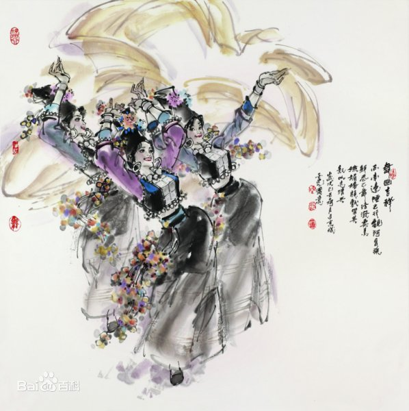

- 民族简介
- 文化习俗
- 历史发展
- 旅游介绍
阿昌族是云南特有的、人口较少的7个少数民族之一，民族语言为阿昌语，属汉藏语系藏缅 语族，语支待定，有梁河方言和户撒方言两种方言，兼通汉语、傣语等其他民族的语言或方 言，无本民族文字，使用汉字。
阿昌族主要分布于云南省德宏傣族景颇族自治州陇川县户撒阿昌族乡、梁河县囊宋阿昌族乡、九保阿昌族乡，其余分布于潞西、盈江、腾冲、龙陵、云龙等县。此外，在邻国缅甸也有部分阿昌族分布。 阿昌族制造的铁器极负盛名，以“户撒刀”著称于世。根据2010年第六次全国人口普查统计，阿昌族总人口数为39555人。
阿昌族在古代汉文献中，曾被称为“峨昌”、“莪昌”、“娥昌 ”或“萼昌”。 阿昌族还有不同的自称，户撒地区阿昌族自称为“蒙撒”、“傣撒”、“蒙撒掸”、“衬撒”；梁河地区阿昌族则自称为“汉撒”、“阿昌”、“峨昌”。 1953年，人民政府根据阿昌族人民的意愿，决定统一称为“阿昌” 。 
信仰
由于受多元文化的影响，阿昌族的宗教信仰形成了多种宗教并存的状态。其中有自然崇拜、鬼神崇拜、祖先崇拜、小乘佛教、汉传佛教及道教。
饮食
阿昌族饮食以大米为主食，辅以面食，嗜食酸笋、酸 菜等食物，也喜食火烧猪肉。 户腊撒的“过手米线”、梁河的黄花粑粑及生片石姜等是较有特色的民族风味食品。 阿昌族喜欢饮酒，多数人家自酿米酒。已婚妇女大多喜欢嚼槟榔，闲暇时，大家互传槟榔，以牙齿染成黑色为美 [1] 。
服饰
阿昌族服饰别具风格，各地稍有差别。 传统上，阿昌族男子一般穿蓝色、白色或黑色的对襟上 衣，黑色长裤。腊撒地区的成年男子也有穿左襟上衣的。户撒阿昌族男性青壮年喜欢包白色包头，梁河的男性青壮年则喜欢包黑色包头。 妇女的服饰因地而异。户撒阿昌族女性的服饰，已婚和未婚的没有区别，均与附近傣族的很相似。腊撒、梁河两地妇女上衣均为长袖圆摆对襟衣，下着筒裙，也配戴银项圈、银手镯等饰物。两地已婚妇女包头制作款式略有差别，梁河妇女的包头约有33公分高，而腊撒妇女是带圆盘黑包头。少女的传统服饰是浅色对襟上衣，下着深色裤子。腰系绣花围裙，发辫挽于头顶，发辫上插花。 改革开放以来，一些阿昌族妇女买来布和花边来缝制围腰，取代耗工费时的机织围腰。其着装正走向简化，裤子代替了筒裙，还改良了包头布。许多年轻人均改穿汉装和傣装，只有头部装饰还保留一些民族特色，但在节日和接待客人时，仍要穿上民族盛装 [1] 。
建筑
阿昌族多居住在坝区和半山区。村寨一般选择在有阳光、水源充足的地方。新中国成立前，阿昌族人民的生活较苦，大多数人住茅草房，即以竹、木为屋架，篱笆糊泥为墙，茅草盖顶。1949年以后，茅草房逐步减少，改革开放以来，基本绝迹。
阿昌族源于古代的氐羌族群，而与南诏、大理国时期的“寻传蛮”有直接的渊源。唐代文献中称为“寻传蛮”的，即是阿昌族和景颇族的前身。今日所用族称“阿昌”，则最早见于元代文献《招捕总录》、《元史·地理志》等。
阿昌族在发展形成过程中，曾与诸多民族融合。宋元时期，内地商 服饰和图腾 服饰和图腾 人已进入云龙一带阿昌人中。明代在云南实行军民屯田，汉族人口大量移入，一部分阿昌人融入到汉族及其他民族中，也有部分汉族融入到阿昌人中，如明军屯守军的后代多在当地转化为阿昌族及其他民族。明清以来阿昌族长期与汉、白、傣等民族交往密切，也多有融合。
阿昌族民间对自身来源有不同的看法。以陇川县户撒乡为例，当地就有“东来说”、“南来说”、“内地来说”等不同的说法。而且部分群众家还保留着证明他们来自内地的家谱。根据部分学者的意见，“北来说”和“东来说”是比较可靠的说法，并说明他们与景颇族在历史上有渊源关系。 这些情况说明，阿昌族虽然人口不多，但他的来源也较复杂，也是一个多元一体的民族。
阿昌族的先民很早就居住在滇西北的金沙江、澜沧江和怒江流域一带，后来一部分迁至怒江西岸，即古代称作“寻传”的地区，再逐渐南移，约于13世纪定居于现在的陇川县户撒坝子，另一部分则沿云龙、保山、腾冲迁徙，最后定居于梁河地区。
阿昌族寨
阿昌族寨以一幢合院系建筑为主体，与寨门、手工作坊等建筑互为呼应，青瓦砖墙，石础抬柱，颇具特色。
阿昌族是云南省的独有民族之一，主要分布在德宏州的陇川、梁河、潞西等县，人口3．5万，民间多信奉鬼神、祖先的原始宗教，一些地区也信仰小乘佛教。阿昌族为氐羌后裔，其先民公元2世纪即进入滇西北怒江流域，其中一部分约在13世纪定居于现陇川县户撒坝子，另一部分其后定居于梁河地区。阿昌族工匠生产的“户撒刀”有长刀、短刀和藏刀等，品种繁多，精致美观，品质优良，历来行销于省内、川藏等地及缅甸等国。